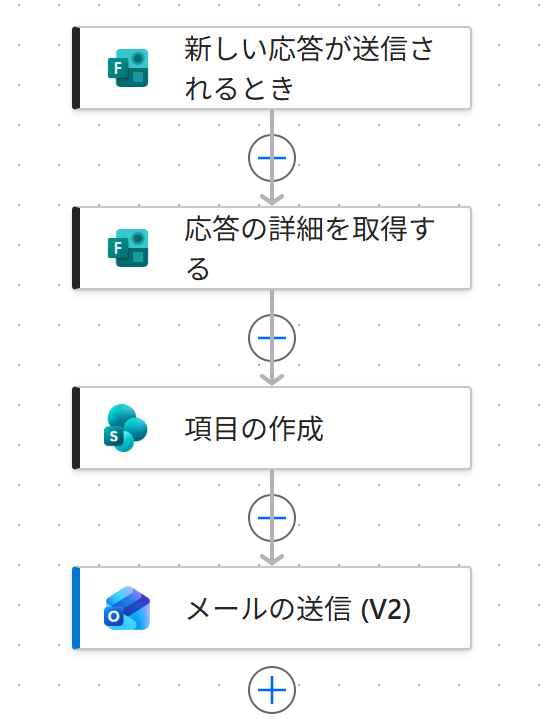

Vol.146-3
実際に作ったフロー：アクションは4つだけ

PA45 Demo 環境に作ったフローの画面です。
受付番号を作る専用の仕組みは無く、項目の作成の結果をそのまま使っています
受付番号を作る専用の仕組みは無く、項目の作成の結果をそのまま使っています

12341
新しい応答が送信されるとき
申込フォームに回答が届いたら起動
2
応答の詳細を取得する
回答した人のメールアドレスなどを取る
3
項目の作成
申込台帳に1行。ここで ID が決まる
4
メールの送信 (V2)
件名と本文に A-ID を入れて返信
番号を数える変数は使っていない
ID はリストが振るので、同時に2人が送っても番号は重ならない
向いている人セミナー・勉強会の事務局社内研修の受付備品の貸出申請相談窓口
出典：Microsoft Learn